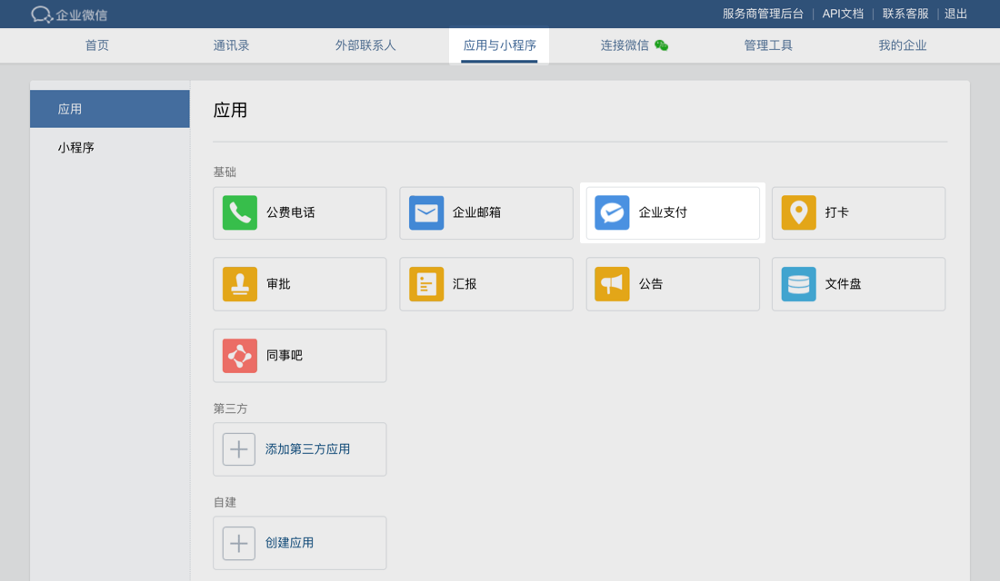
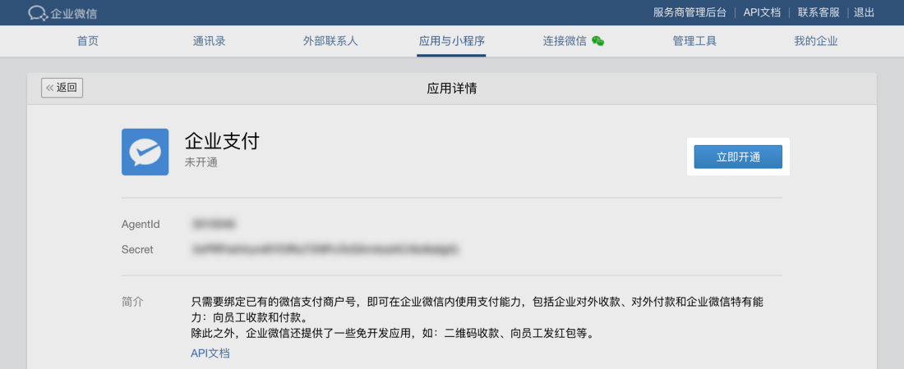
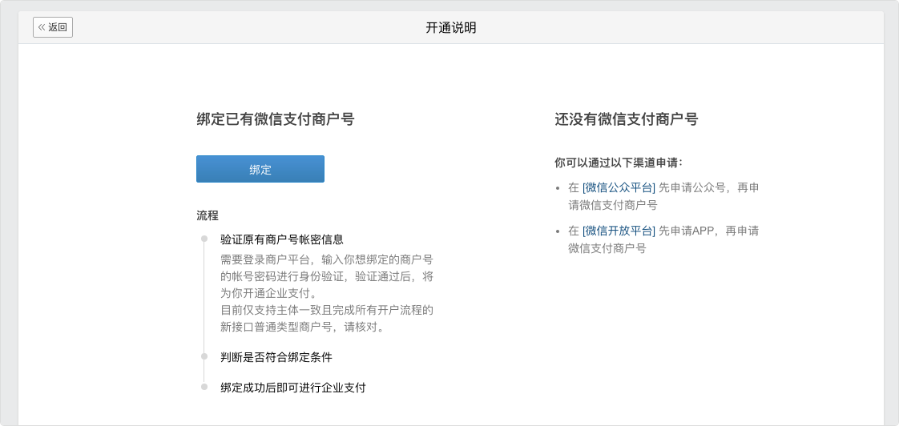
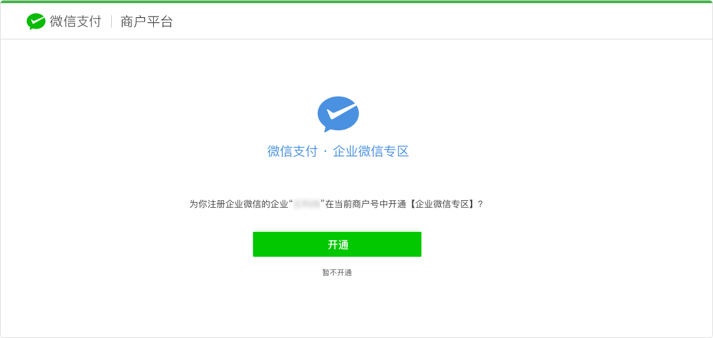
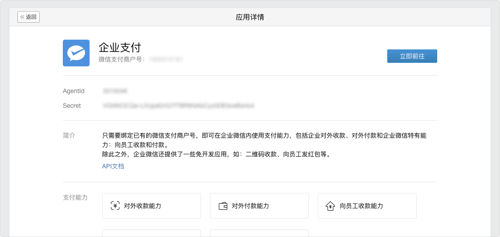
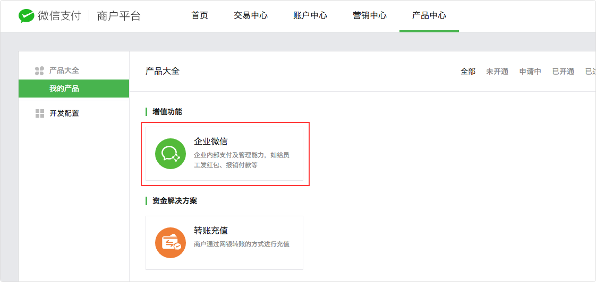
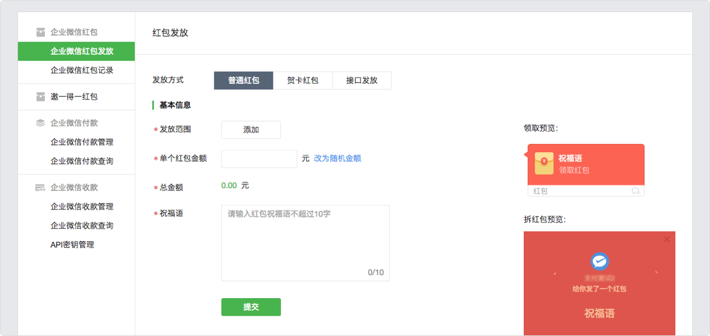

企业支付接口旨在方便企业使用红包、付款、收款这些API开发丰富多彩的应用。
使用企业支付接口前需要通过企业微信管理端绑定已有微信支付商户号。
开始开发
1、管理员进入企业微信“管理后台” — “企业应用”—“企业支付”。
2、如果已有微信支付商户号，直接点击绑定。如果没有，请先通过微信公众平台或微信开放平台申请微信支付商户号。
3、在商户平台确认绑定

4、企业微信管理端更新状态为已开通，可使用企业支付功能

企业微信和企业号融合的兼容规则
- 融合后，如果用户不升级到企业支付，在微信插件中的原功能及接口不受影响，但在微信支付商户平台无法使用企业微信专区，无法使用新的企业支付接口。
- 融合后，如果用户升级到了企业支付，在微信插件中的原功能及接口不受影响，还可以使用微信支付商户平台的企业微信专区，以及使用新的企业支付接口开发丰富多彩的应用。但新接口发出的红包仅能在企业微信app中使用。
- 全新创建的企业微信，将拥有微信支付商户平台的企业微信专区、以及新的企业支付接口能力。但原企业号的微信支付接口，企业红包和企业付款将不可用。